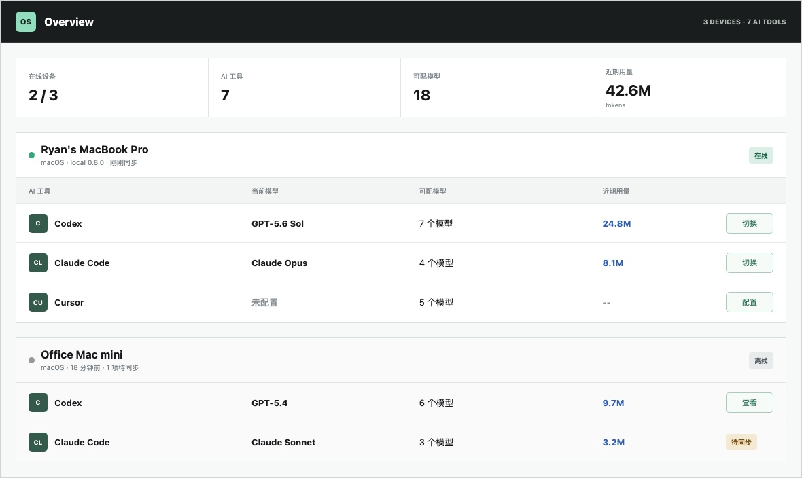

偏好简洁、直接的中文技术回答

查看产品概览Overview设备 · 工具 · 模型 · 用量
Key Wallet自动登记 · 按需读取 · E2EE
Memory后台生成 · 用户确认
Connections授权与能力统一管理
OVERVIEW
打开一处，看清每台设备的 AI 状态
概览围绕在线设备、已安装工具、当前模型、可配模型和使用量组织。配置健康、待同步与失败状态保持可见，常用操作可以直接进入对应设备。
在线设备2 / 3
AI 工具7
可配模型18
近期用量42.6Mtokens
Ryan's MacBook PromacOS · local 0.8.0 · 刚刚同步
在线
AI 工具当前模型可配模型近期用量
CCodexGPT-5.6 Sol7 个模型24.8M切换
CLClaude CodeClaude Opus4 个模型8.1M切换
CUCursor未配置5 个模型--配置
Office Mac minimacOS · 18 分钟前 · 1 项待同步
离线
CCodexGPT-5.46 个模型9.7M查看
CLClaude CodeClaude Sonnet3 个模型3.2M待同步
界面示例展示最新产品信息结构；近期用量来自有界、去重后的 Codex 与 Claude Code 本机会话统计。
KEY WALLET · E2EE
一个钥匙串，供所有设备和 Agent 使用
密钥钱包自动识别模型配置，也接收用户交给 Agent 的账号密码、SSH、云平台凭据、卡密、Token 和证书。条目在客户端加密后同步，云端只保存密文。
- 01自动扫描只读识别 Codex、Claude Code、CC Switch 与本机模型服务
- 02自动登记用户向 Agent 提供可复用凭据时，同轮加密写入钱包
- 03端到端同步账号、主机、用途与 Secret 随 E2EE Vault bundle 到达其他设备
- 04按需使用Agent 按服务、主机、账号、项目和用途选取；模型可以直接切换
- 05持续更新密码或 Token 轮换时更新原条目，所有读取留下脱敏审计
查看 / 复制初始密码 123456 · 可修改
切换模型已授权即可
Agent 读取按用途直接使用 · 脱敏审计
MEMORY
记忆在后台形成，决定权始终留给用户
后台记忆生成机制从明确记忆请求、项目文档、Handoff、Git 事实和重复习惯中提炼结构化候选。记忆页面统一完成确认、编辑、删除和类别控制。
- 01 记录观察时间、来源 Agent、项目与置信度
- 02 合并重复观察，持续更新出现次数
- 03 原始会话默认留在本机
跨设备只同步经过 E2EE 的结构化记忆。后台生成机制不会出现在主导航中。
JavaScript 项目优先使用 pnpm
后台已更新12 条有效记忆2 条等待确认
CONNECTIONS · CAPABILITIES
连接服务时，能力和权限一起就位
连接页面把账号授权、工具能力、Agent 范围和审计状态放在同一行。Capability Pack 继续负责内部适配，用户无需管理另一套安装入口。
服务已启用能力Agent 访问状态
GHGitHub仓库读取 · Issue 创建 · PR 评论Codex 读写 · Claude 只读已连接
GCGoogle Calendar日程读取 · 空闲查询 · 创建日程Codex 读取已连接
SLSlack频道读取 · 搜索 · 消息发送等待 Agent 授权待设置
第三方服务只授权 One Status 一次；每个 Agent 只连接 One Status，并拥有独立的 action 权限。
PROJECTS · HANDOFF
从另一台设备的最后一步继续
项目页面管理本地仓库、GitHub 映射、同步状态和 Handoff。程序采集 branch、commit、dirty state 与测试结果，Secret 扫描和用户确认通过后才会推送。
- ✓ 精确 Git commit 与文件 SHA-256
- ✓ 本机绝对路径按设备独立保存
- ✓ Continue with Codex / Claude Code
# One Status Handoff
Current Goal
Connect Key Wallet to device overview
Completed
✓ Encrypted Status sync
✓ GitHub connection
✓ Secret scan passed
Next
→ Continue on Mac B with Codex
Git State
branch: main
commit: 4df024b30a21
dirty: falseDOWNLOAD · GITHUB
选一种方式，开始使用
桌面 App 自带本机后台服务。CLI、MCP 和自托管服务也可以独立安装。
桌面端
One Status Desktop
安装后从 Applications 或开始菜单启动。页面会自动选择最新已发布版本。
SHA-256 校验
一条命令安装桌面版
脚本从 GitHub Release 下载产物，并使用同一 Release 的 SHA256SUMS 验证。
- macOS 默认位置
~/Applications/One Status.app - 新签名版验证 SHA-256、Bundle ID、Developer ID、Hardened Runtime 与 Apple 公证票据。
- 旧版保护未通过公证或票据校验时新版安装器立即停止，不清除 quarantine。
macOS / Linux
curl -fsSL https://niyuxuan782.github.io/one-status/install.sh | bash
Windows PowerShell
irm https://niyuxuan782.github.io/one-status/install.ps1 | iex
macOS App + CLI
Homebrew
Cask 安装桌面 GUI；Formula 安装 CLI、MCP 与常驻本机服务。
Desktop App
brew tap niyuxuan782/tap
brew install --cask niyuxuan782/tap/one-status
CLI + Service
brew tap niyuxuan782/tap
brew trust --formula niyuxuan782/tap/one-status 2>/dev/null || true
brew install --formula niyuxuan782/tap/one-status
brew link --overwrite --force niyuxuan782/tap/one-status
brew services start niyuxuan782/tap/one-status
Node.js 22+
CLI / MCP
适合开发者、自托管节点和无桌面环境；安装器会同时安装原生 Device Sidecar。
Install CLI
curl -fsSL https://niyuxuan782.github.io/one-status/install.sh | bash -s -- --cli
SECURITY · SETTINGS
切换保持顺手，密钥明文始终受保护
钱包条目、记忆、任务状态和配置意图在设备端加密。用户查看或复制密钥必须输入钱包密码；模型切换无需密码；Agent 使用绑定身份按用途读取获准凭据，并只留下脱敏审计。
Device AScan and encrypt locally
→
E2EE CiphertextKeys · memory · intent
→
Device BDecrypt and apply locally
OPEN CORE
本地核心开放审计
Desktop、CLI、MCP、加密实现和 Sync API 使用 Apache-2.0。模型配置 Sidecar 固定 CC Switch 3.19.2 来源 commit，并在原生产物中保留 MIT notice 与版权声明。